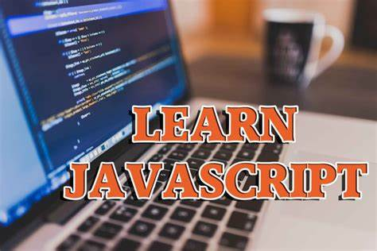

22 Free Websites to Learn JavaScript in 2023
JavaScript is a programming language that's used for a variety of purposes, including web development, web apps, game development, and more. JavaScript also lets you add dynamic features to web sites that you can't just achieve with HTML and CSS.
Importance of javascript
JavaScript is the most important language you need to learn as a frontend developer. It's a great first language for web developers to learn because:
1.Web apps are dynamic because of JavaScript.
2.When it comes to responsive design, JavaScript comes in handy.
3.For backend and server-side programming, JavaScript is one of the most effective languages.
JavaScript makes up a crucial part of the structure of any website, along with HTML and CSS:
HTML forms the basic structure of the website.
CSS is used for styling the websites.
JavaScript makes the website dynamic and allows you to add some animation.
When you're starting to learn about web development basics, the vast amount of resources out there might overwhelm you. So in this guide, I'm sharing some of my favorite resources to learn JavaScript to help you get started.
22 free websites to learn javascript in 2023
freeCodeCamp.org is a 501(c)3 non-profit organisation that can help you learn to code for free, build real-world projects, and prepare for getting your first (or nth) developer job. It is one of the most exceptional communities and learning websites for developers. Its project-based curriculum will help you solidify the skills you're learning as you go, and its community of helpful volunteers and other campers can offer support when you need it. freeCodeCamp also has a YouTube channel, publication, and forum to help you learn topics like Python, JavaScript, data science and machine learning, web development, web design, and a whole lot more.
JavaScript 30 helps you build things with code. Lots of things. Build 1,000 things. Seriously. It also contains a lot of free JavaScript tutorials and lessons.
JavaScript tutorials by JavaScript 30:
1.30 Day Vanilla JS Coding Challenge2.Build 30 things in 30 days with 30 tutorials 3.No Frameworks × No Compilers × No Libraries × No Boilerplate
Code Mentor offers a 4-week course to learn JavaScript. Yeah, another impressive site for JavaScript tutorials.
You can even book a 1:1 class with a mentor, which will cost you money (About $15 per hour). You will not only learn about core JavaScript but also about other famous JavaScript libraries and related concepts like Ajax, Json, jQuery, Angular JS, and more.
This course is made by Educative. Learn to code and create your own web pages using HTML, CSS, and JavaScript in this interactive web development course for beginners.
Instead of watching endless videos and wondering how to translate those videos into proper code, you'll be practicing what you learn through interactive, test-based exercises.
Here is an introduction to JavaScript course for complete beginners. It'll take you through the fundamentals of the language. Topics include variables, operators, functions, arrays, objects, and loops.
This course is not completely free, but you can take a free trial to watch this course.
Learn JavaScript from the basics to advanced topics with simple yet detailed explanations. As the name implies, this website's tutorials are focused on JavaScript only.
The main course contains 2 parts which cover JavaScript as a programming language and working with a browser. This website is great for a range of developers, from beginners to advanced.
Codecademy is a subscription-based website, with a lot of free courses as well. It offers a wide variety of courses taught by many different instructors.
And it has a really great interactive JavaScript course that'll help you learn online at your own pace.
No matter your experience level, you'll be writing real, functional code while learning with Sololearn.
These courses were designed by experts with real-world practice. You can also earn certificates, but you have to get the PRO version of Sololearn for that [ $12/mo ].
At tutorial republic you can learn the essentials of web development technologies from basic to advanced topics, along with real life practice examples and useful references.
You will find several interactive tools like an HTML Editor, SQL Playground, and Color Picker.
Created by developers from Google, JavaScript online offers 40 free courses that you can dive into to start learning JS.
You will also find some project-based code tutorials that are the best ways to learn the language, like the Flashcard application.
edX offers a bunch of free courses, including JavaScript courses that were made by different universities, like Harvard and other prestigious schools.
All of the courses themselves are 100% free on edX – but if you want a certificate, you will need to pay some money for it. This seems reasonable, as they will come from they the top universities like MIT, and Harvard, but don't forget that there are other options that don't charge a penny.
Mozilla Developer Network or MDN is more like documentation that developers can read and learn from.
Many developers who use MDN are quite knowledgeable about various programming languages, and have been coding for a long time. So I don't necessarily recommend MDN for beginners. But there are a lot of answers to be found there if you put in the time and effort.
CodeCombat is a platform for students to learn computer science while playing through an actual game.
Courses have been specifically play tested to preform well in the classroom, even with teachers with little to no prior programming experience.
Want to learn JavaScript basics in one hour? If yes, then you can check out this YouTube video by Programming With Mosh.
Mosh has designed this course for beginners to learn JavaScript from scratch. You don't need any prior experience with JavaScript or any other programming languages.
DevDocs is free and open source project that's maintained by freeCodeCamp. It combines a bunch of API documentation in a fast, organised, and searchable interface.
The best thing is that it contains docs for almost every popular language and framework available in the market.
Coursera is a learning website developed by Stanford professors. It is a mix of free and paid online courses, and it’s applicable on all levels – for beginners, juniors and even senior developers. Some of the paid courses also provide a certificate.
You can also apply for a scholarship if you can't afford the paid courses or certificates, and Coursera is great about offering these scholarships to those in need.
JSDoc is an open source project that has tons of info about JavaScript. On this website, you is a bunch of documentation about JavaScript. This project currently has over 12 thousand starts on GitHub.
GitHub is an amazing source of knowledge for developers all over the world. By studying and contributing to real projects from developers around the world, you will learn much faster.
DEV is a community of software developers writing articles to learn and help one another out. It's a blogging platform where developers share what they're learning – as simple as that.
It's easy to set up your own DEV account and start writing, along with thousands of other developers.
Hackernoon is an online publication that focuses on topics like technology, blockchain, startups, projects, AI / ML and development.
You maybe now thinking about, what's the difference between DEV and Hackernoon? All articles on Hackernoon are edited by its editorial team, so you can expect high quality. Also, it's 100% Free.
Web Design Weekly, as the name suggests, is a weekly newsletter for Developers and Designers. It contains developer tips and ideas. There are over 30,000 developers and designers who get articles delivered right to their inbox each week.
Similar to Web Design Weekly, JavaScript weekly is also a newsletter. This weekly newsletter contains JavaScript articles, news, tips and cool projects. There are more than 175k Email Subscribers to JavaScript Weekly.
Medium is a blogging platform that gives writers a place to share their thoughts with others. There are a lot of medium publications that publish articles about programming.
Some of the publications I'd recommend are JavaScript in Plain English, Git Connect, and Better Programming.
To read unlimited articles, you'll need to get a $5/mo plan. But there are many writers who publish the articles with no paywall.
That's a Wrap!
Thanks for reading this article.